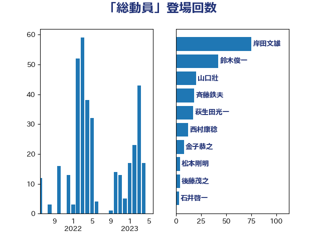

単語「総動員」

| 岸田文雄 | 自由民主党 | 75 回 |
| 鈴木俊一 | 自由民主党 | 42 回 |
| 山口壯 | 自由民主党 | 20 回 |
| 斉藤鉄夫 | 公明党 | 18 回 |
| 萩生田光一 | 自由民主党 | 17 回 |
| 西村康稔 | 自由民主党 | 12 回 |
| 金子恭之 | 自由民主党 | 8 回 |
| 松本剛明 | 自由民主党 | 4 回 |
| 後藤茂之 | 自由民主党 | 4 回 |
| 石井啓一 | 公明党 | 3 回 |
| 森本真治 | 立憲民主党 | 3 回 |
| 梶山弘志 | 自由民主党 | 3 回 |
| 山際大志郎 | 自由民主党 | 3 回 |
| 黄川田仁志 | 自由民主党 | 2 回 |
| 西銘恒三郎 | 自由民主党 | 2 回 |
| 笠井亮 | 日本共産党 | 2 回 |
| 竹内真二 | 公明党 | 2 回 |
| 福島伸享 | 無所属 | 2 回 |
| 石井正弘 | 自由民主党 | 2 回 |
| 滝沢求 | 自由民主党 | 2 回 |
| 江島潔 | 自由民主党 | 2 回 |
| 東徹 | 日本維新の会 | 2 回 |
| 末松信介 | 自由民主党 | 2 回 |
| 庄子賢一 | 公明党 | 2 回 |
| 前原誠司 | 国民民主党 | 2 回 |
| 鳩山二郎 | 自由民主党 | 1 回 |
| 鬼木誠 | 立憲民主党 | 1 回 |
| 高橋光男 | 公明党 | 1 回 |
| 青柳陽一郎 | 立憲民主党 | 1 回 |
| 青島健太 | 日本維新の会 | 1 回 |
| 階猛 | 立憲民主党 | 1 回 |
| 長峯誠 | 自由民主党 | 1 回 |
| 進藤金日子 | 自由民主党 | 1 回 |
| 足立敏之 | 自由民主党 | 1 回 |
| 赤嶺政賢 | 日本共産党 | 1 回 |
| 西田実仁 | 公明党 | 1 回 |
| 西村明宏 | 自由民主党 | 1 回 |
| 藤丸敏 | 自由民主党 | 1 回 |
| 芳賀道也 | 国民民主党 | 1 回 |
| 自見はなこ | 自由民主党 | 1 回 |
| 簗和生 | 自由民主党 | 1 回 |
| 竹谷とし子 | 公明党 | 1 回 |
| 秋野公造 | 公明党 | 1 回 |
| 福重隆浩 | 公明党 | 1 回 |
| 石井章 | 日本維新の会 | 1 回 |
| 盛山正仁 | 自由民主党 | 1 回 |
| 畦元将吾 | 自由民主党 | 1 回 |
| 田野瀬太道 | 無所属 | 1 回 |
| 田畑裕明 | 自由民主党 | 1 回 |
| 田村憲久 | 自由民主党 | 1 回 |
| 甘利明 | 自由民主党 | 1 回 |
| 河野義博 | 公明党 | 1 回 |
| 河西宏一 | 公明党 | 1 回 |
| 永岡桂子 | 自由民主党 | 1 回 |
| 武部新 | 自由民主党 | 1 回 |
| 森屋隆 | 立憲民主党 | 1 回 |
| 柳ヶ瀬裕文 | 日本維新の会 | 1 回 |
| 松野博一 | 自由民主党 | 1 回 |
| 末松義規 | 立憲民主党 | 1 回 |
| 朝日健太郎 | 自由民主党 | 1 回 |
| 後藤祐一 | 立憲民主党 | 1 回 |
| 平林晃 | 公明党 | 1 回 |
| 平木大作 | 公明党 | 1 回 |
| 市村浩一郎 | 日本維新の会 | 1 回 |
| 岬麻紀 | 日本維新の会 | 1 回 |
| 岩田和親 | 自由民主党 | 1 回 |
| 岩渕友 | 日本共産党 | 1 回 |
| 岡本三成 | 公明党 | 1 回 |
| 岡本あき子 | 立憲民主党 | 1 回 |
| 山添拓 | 日本共産党 | 1 回 |
| 山本剛正 | 日本維新の会 | 1 回 |
| 尾崎正直 | 自由民主党 | 1 回 |
| 小林茂樹 | 自由民主党 | 1 回 |
| 小山展弘 | 立憲民主党 | 1 回 |
| 大岡敏孝 | 自由民主党 | 1 回 |
| 大家敏志 | 自由民主党 | 1 回 |
| 吉田久美子 | 公明党 | 1 回 |
| 八木哲也 | 自由民主党 | 1 回 |
| 伴野豊 | 立憲民主党 | 1 回 |
| 仁比聡平 | 日本共産党 | 1 回 |
| 井上信治 | 自由民主党 | 1 回 |
| 中谷真一 | 自由民主党 | 1 回 |
| 中西祐介 | 自由民主党 | 1 回 |
| 中川康洋 | 公明党 | 1 回 |
| 上田勇 | 公明党 | 1 回 |
| 三浦靖 | 自由民主党 | 1 回 |
| 三上えり | 立憲民主党 | 1 回 |
| ながえ孝子 | 無所属 | 1 回 |